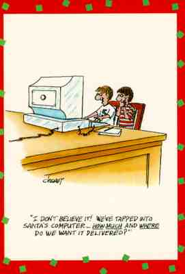

|
This is a writeup on a security survey of approximately 2200 computing
systems on the Internet that I did in November-December of 1996. I
performed the survey out of curiosity, but I'm writing this report
in an attempt to disseminate my rather startling and depressing results.
I chose high profile and commerce-oriented World Wide Web (WWW) sites as survey participants, along with a scattering of randomly selected Internet systems to have something to compare my results with. The profiled systems were hosting WWW services for organizations such as banks, federal institutions, newspapers, etc. What I found was remarkable: using simple, non-intrusive techniques, I determined that nearly two-thirds of these interesting hosts had serious potential security vulnerabilities - a rate about twice that of the randomly selected hosts! The rest of this paper are my thoughts and observations on the results and how they relate to the current Internet situation. This is not meant to be a serious or definitive statistical survey, nor were any computers broken into during the experiment. Instead, I have attempted to detail the nature of the problems I found with some suggested solutions and observations. |
 |
dan farmer
December 18th, 1996
|
(Card image was taken from www.greetst.com, a fine on-line greeting card company.)